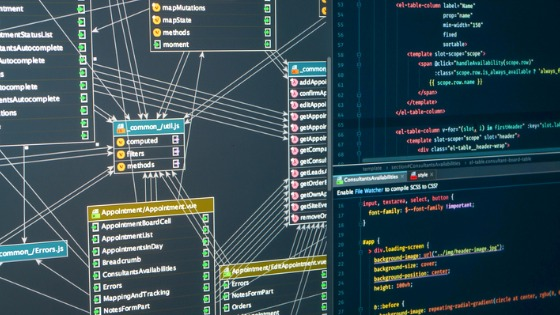

Power BI Dashboard
An interactive Power BI report focused on presenting trends, comparing key indicators and communicating insights through visual dashboards.
Data Analyst Portfolio
SQL | Python | Power BI

Data analysis projects using SQL, Python and Power BI.
Welcome to my portfolio. This site presents selected data analysis projects that demonstrate my ability to work with databases, clean and analyze data, build visual dashboards, and extract meaningful business insights. My work combines analytical thinking, technical tools, and clear data storytelling.
My projects include data extraction, cleaning, analysis, visualization, and presentation of insights using common tools in the data analyst workflow.
Below are selected projects from my GitHub repository. Each project demonstrates a different part of the data analysis process, including SQL, Python and Power BI.
An interactive Power BI report focused on presenting trends, comparing key indicators and communicating insights through visual dashboards.

A Python notebook project using data analysis libraries to clean, explore, process and visualize data in order to identify patterns and insights.

A SQL project demonstrating database querying, joins, filtering, aggregations and structured data analysis.

An additional SQL project focused on deeper data exploration, analytical queries and answering business questions based on structured datasets.
Thank you for visiting my portfolio. You can view my projects on GitHub or connect with me on LinkedIn.